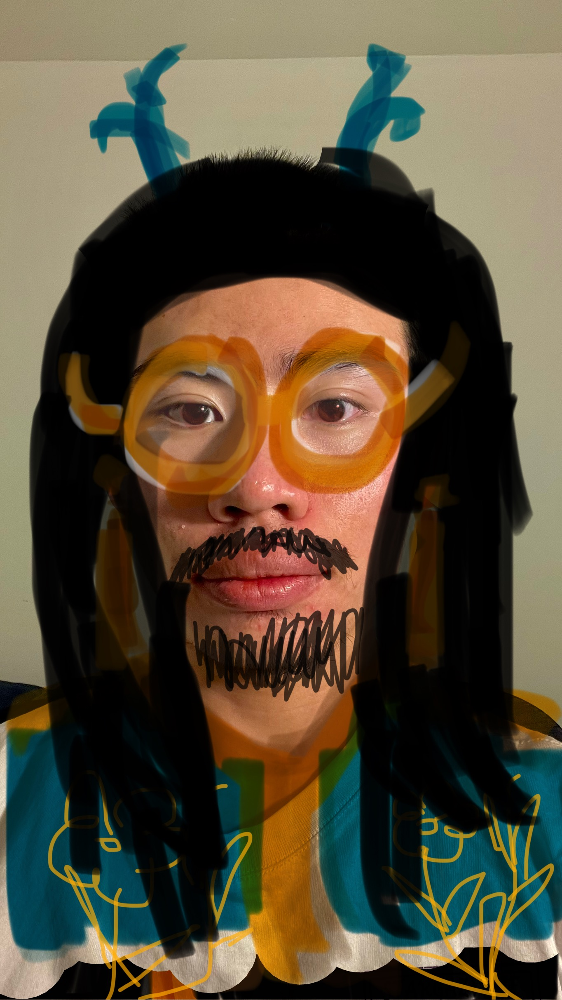

My character's name is Long. He is an Eastern-inspired humanoid dragon. Other than his horns, he is human-passing for the most parts.
He originates from Long Island (not to be mistaken with the New York State island), where dragons and humanoid dragons have established themselves. Though they are allowed to cohabit, humanoid dragons are seen as “inferior” due to their human characteristics and inability to transform into full-fledge dragons and thus treated unfavorably. It is not uncommon for humanoid dragons like Long to move elsewhere, where they are perhaps a little more accepted, once they reach maturity.
In Long Island, the inhabitants hold a triannual Roman-esque gladiatorial contest in which there can only be one survivor among 20 participants. It is a communally-agreed-upon means to address the issue of overpopulation as well as to establish the next Leader. Participation is voluntary. The brutality, in part, contributes to Long’s reason to move.
In terms of physical traits, he is, as his name suggests, quite tall; has a beard, a big nose, and blemished skin; and is sporting a pair of gold-rimmed glasses as he is near-sighted. Personality-wise, he is generally well-intentioned but because of how curt he is, it comes off as unfriendly and sometimes hostile. Those who got past the initial stage of being off-put by his curtness are usually surprised at how thoughtful and caring he actually is, but by and large most people tend to avoid him, which he doesn't mind. Given his nature, he prefers it as a matter of fact.
My character can reincarnate himself, but with each rebirth, he loses all memories of previous life and starts anew. While alive, he possesses fast regenerative healing, so wounds are usually not a matter of concern. But he is susceptible to fatal injuries and diseases just like everyone else.